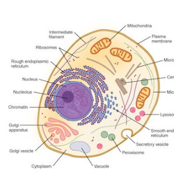
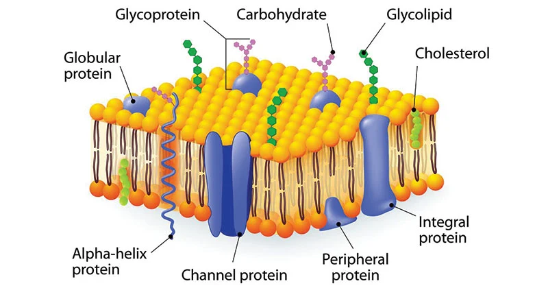

| LIPIDS |
|---|
| Long-term stored energy. Can be separated into triglycerides and phospholipids (important in cell transit!). |
| Triglycerides’ basic structure can be boiled down into 1 glycerol molecule and 3 fatty acids, while phospholipids are boiled down into 1 glycerol molecule, 2 fatty acids and 1 phosphate node that replaces 1 fatty acid. Made with ester bonds and dehydration. |
Fatty acids can be broken down into 3 types, which are unsaturated, saturated and trans fats. Unsaturated is “healthy” and comes from plants and fish, having a C-C bond. Saturated has no C-C bond, and trans fat is unsaturated fat undergoing hydrogenation – a process which introduces hydrogen and makes it solid.
|

Think of it as unsaturated being healthy, saturated being a tad bit unhealthy, whilst trans fats being very unhealthy. Frying foods for example can result in trans fats. |
| Carbohydrates |
|---|
| Simple sugars, it can be used as quick sources of energy. Can be separated into 3 distinct types, Monosaccharides, Disaccharides and Polysaccharides.
|
| Monosaccharides are the monomers/building blocks of carbohydrates. They are simple sugars which can’t be broken down into smaller molecules. Combinations of these serve as the basis for more complex Carbohydrates (Disaccharides and Polysaccharides). They have 3 types: Glucose which is the main energy source of the body; Fructose “fruit sugars” which is very common in plants, and Galactose which is naturally present in mammalian milk. |
Disaccharides are composed of 2 monomers joined together in a dehydration synthesis/reaction (removing water from the molecule). These monomers are connected by a glycosidic bond. This bond can be broken through a hydrolysis reaction (adding water back to the molecule) Disaccharides have 3 types: Maltose ‘malt sugar” (Glucose+Glucose) which is found in germinating seeds; Sucrose “table sugar” (Glucose+Fructose) used as sweeteners for drinks and various foods, and Lactose “milk sugar” (Glucose+Galactose) which is found from mammalian milk, providing energy for newborn mammals.
|
Polysaccharides are composed of 3 or more monosaccharides. They are formed through a series of dehydration reactions and are held together by glycosidic bonds. Polysaccharides have 3 types: Starch, the primary storage of energy in plants; Cellulose for the structure of plants, and Glycogen, the storage form of carbohydrates, kept in the liver.
|
